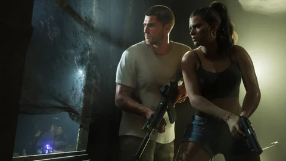

PistolasCorta
Oficial
Girardi ES9
Inspiración: Beretta 92FS
Precio próximamenteMunición: pistola
Ver la fichaArmería
Las armas, la munición, los gadgets y tu equipo, en el mismo sitio. Todo viene de los tráileres, las capturas y el Extended Look; nada de las filtraciones. Las estadísticas llegarán con el juego.
Monta tu arsenal según las reglas confirmadas por Rockstar.
Elige tus armas. El constructor comprueba que tu equipo cumple las reglas.
Marca las armas que tienes con la casilla de arriba a la derecha de cada tarjeta, o selecciona hasta tres con “Comparar”. Todo queda guardado en tu dispositivo.
Inspiración: Beretta 92FS
Precio próximamenteMunición: pistola
Ver la fichaInspiración: Glock 17 / SIG P320
Precio próximamenteMunición: pistola
Ver la fichaInspiración: Bersa Thunder 380
Precio próximamenteMunición: pistola
Ver la fichaInspiración: Smith & Wesson 629
Precio próximamenteMunición: pistola
Ver la fichaInspiración: Colt 1911
Precio próximamenteMunición: pistola
Ver la fichaInspiración: Glock con switch
Precio próximamenteMunición: pistola
Ver la fichaInspiración: Colt Python
Precio próximamenteMunición: pistola
Ver la fichaInspiración: Escopeta de caza yuxtapuesta
Precio próximamenteMunición: cartuchos
Ver la fichaInspiración: Mossberg 590
Precio próximamenteMunición: cartuchos
Ver la fichaInspiración: Mini Uzi
Precio próximamenteMunición: pistola
Ver la fichaInspiración: Škorpion
Precio próximamenteMunición: pistola
Ver la fichaInspiración: H&K MP5
Precio próximamenteMunición: pistola
Ver la fichaFamilia: Subfusil moderno con culata plegable
Precio próximamenteMunición: pistola
Ver la fichaInspiración: AR-15 / M4
Precio próximamenteMunición: fusil
Ver la fichaInspiración: AK
Precio próximamenteMunición: fusil
Ver la fichaInspiración: Remington 700
Precio próximamenteMunición: fusil
Ver la fichaInspiración: Springfield M1A
Precio próximamenteMunición: fusil
Ver la fichaInspiración: M249 SAW
Precio próximamenteMunición: pesada
Ver la fichaFamilia: Bate de béisbol de aluminio
Precio próximamenteMunición: por confirmar
Ver la fichaFamilia: Navaja automática
Precio próximamenteMunición: por confirmar
Ver la fichaFamilia: Hierro de golf
Precio próximamenteMunición: por confirmar
Ver la fichaFamilia: Martillo de carpintero
Precio próximamenteMunición: por confirmar
Ver la fichaFamilia: Taco de billar americano
Precio próximamenteMunición: por confirmar
Ver la fichaFamilia: Botella incendiaria improvisada
Precio próximamenteMunición: por confirmar
Ver la fichaFamilia: Granada de humo de mano
Precio próximamenteMunición: por confirmar
Ver la fichaFamilia: Fusil de pesca submarina de gomas
Precio próximamenteMunición: arpones
Ver la fichaInspiración: Milkor MGL
Precio próximamenteMunición: granadas
Ver la fichaNinguna arma coincide.
Extended Look
Lo que Rockstar confirmó en el Extended Look.
Inventario invisible, como en las entregas anteriores. Dos armas cortas ocultas encima, según Rob Nelson (consulta “Combate: qué cambia”); no se ha publicado nada más.
Dos como máximo. Solo una puede llevarse a la espalda; la otra tiene que ir en la mano.
Pueden servir de reserva para llevar más equipo.
Los transeúntes se apartan si ven un arma. La policía reacciona según el contexto.
Vuelve el taller, con grabados, tintes y acabados que se anuncian más completos.
Inventario
A menudo se leen totales de 32, 37 o 41 armas. Esas cifras salen en parte de la filtración de septiembre de 2022, cuyo contenido no refleja necesariamente el juego final y que Rockstar nunca ha validado. Aquí solo contamos lo que se ve en el material oficial.
16 objetos
El juego introduce una rueda de dos partes, al estilo de Red Dead Redemption 2: las armas a un lado y el equipo al otro. Estos objetos ocupan sus propias ranuras y sirven sobre todo para los golpes y las misiones de infiltración.
5 familias
Seis cambios
Lo que dicen del combate Rockstar, los tráileres y el Extended Look, y lo que queda por confirmar. Cada tarjeta lleva su nivel de prueba y su fuente.

Dos armas cortas siempre ocultas, más dos armas largas: una a la espalda y otra en la mano. El resto se guarda en el vehículo, que hace de taquilla móvil.
Límite. No se ha detallado cómo se accede exactamente al maletero ni qué cabe en él; según los avances, solo el vehículo personal conserva toda su carga.
Fuente GamingBolt, 7 de septiembre de 2026 — declaraciones de Rob Nelson (Rockstar North) a TGG

En el Extended Look, Jason, sentado detrás, dispara con un fusil automático por la luna trasera durante una persecución. El Tráiler 2 muestra a Lucia con un lanzagranadas desde la parte trasera de un vehículo.
Límite. Lo de ponerse de pie para disparar desde la caja de una pick-up lo cuentan webs de fans sin ninguna secuencia oficial: por confirmar.
Fuente Engadget, 27 de agosto de 2026 — “Breaking down the GTA 6 extended look”
Las capturas oficiales muestran inmersiones y el buceo figura entre las actividades que cita Game Informer. Ningún tráiler, ninguna captura y ninguna declaración de Rockstar muestra un arma usada bajo el agua.
Límite. El fusil de arpón solo lo citan webs de fans, a partir de las filtraciones de 2022, que este sitio no usa. Lo planteamos como una pregunta, no como un hecho.

Un arma larga a la espalda no molesta a nadie; en la mano, “a la gente no le gusta”: reacciona y se aleja. Rob Nelson: sacar un fusil de la nada como en GTA V “ya no funciona con esta resolución”.
Límite. No se detalla cómo reacciona la policía ante un arma visible (llamada, nivel de búsqueda).
Fuente Dexerto, 7 de septiembre de 2026 — declaraciones de Rob Nelson (Rockstar North) a TGG

Vuelve el cambio de hombro de la cámara al apuntar: pasas la cámara al otro lado para disparar desde un ángulo de cobertura. El apuntado por defecto se fija menos en el objetivo que antes y los enemigos no aparecen en el radar.
Límite. Se vio durante la demostración de Rockstar North del 27 de agosto de 2026 y lo contaron varios medios; ninguna página de Rockstar lo describe. Lo de “disparar con la mano izquierda o la derecha” no está confirmado en ningún sitio: lo que cambia de lado es la cámara.
Fuente GTABoom, 2 de septiembre de 2026 — avances de TGG y Kinda Funny en Rockstar North

Las capturas oficiales muestran armas grabadas, pintadas o doradas (“Personalized Weapon Variants” de la edición Ultimate, motivo “Vintage Vice City”) y armas con accesorios, como la carabina con mira de Jason.
Límite. No se ven cargadores, munición especial, acabados ni el propio menú de personalización. Las variantes de las ediciones son contenido extra anunciado, no una mecánica descrita.
Fuente Rockstar Games, capturas oficiales de GTA VI (ediciones, 24 de junio de 2026)
Las imágenes son capturas y fotogramas oficiales de Rockstar Games; cuando la imagen ilustra el contexto sin mostrar la mecánica, el pie de foto lo dice. Los niveles de prueba son los de la sección “Cómo leer esta página”. Ver los niveles de prueba.
En el mapa
Las armerías ya localizadas en nuestro mapa de Leonida. Un clic abre el mapa directamente en el lugar.
27 armas
Sin resultados.

Pistolas
Girardi ES9
Dónde encontrarla: Ubicación próximamente (la edición Ultimate incluye una versión de regalo)
Armerías localizadas en nuestro mapa (no es un punto de venta confirmado para esta arma): Phil’s Ammu-Nation, Ammu-Nation, Pawn & Gun.
Método
Rockstar no ha publicado ninguna lista oficial de armas. Por eso cada entrada lleva su nivel de certeza, como en nuestro mapa de Leonida.
El nombre aparece tal cual en material oficial: material de la reserva, portada, web de Rockstar o páginas Only in Leonida.
El arma se ve en el primer tráiler, el segundo tráiler, el Extended Look del 27 de agosto de 2026 o una captura oficial, pero Rockstar no ha dado su nombre.
El nombre o el equivalente real sale de una comparación visual hecha por los jugadores. No es una confirmación de Rockstar ni una licencia oficial.
Nuestra regla. Ninguna marca ni ningún modelo real se presenta como confirmado por Rockstar: las comparaciones del tipo “Grotti recuerda a Ferrari” son observaciones, nunca declaraciones oficiales. Y nada de esta página procede de filtraciones.
Cómo leer estas fichas. A día de hoy, Rockstar ha nombrado cinco armas: la Girardi ES9 de Jason, la Klose K17 de Lucia y los revólveres Hawk & Little Morgan en el material de la edición Ultimate, la Nipper .38, cuyo nombre está grabado en el arma de la portada, y el Mustang .357, cuyo nombre está grabado en el revólver de una motera en las capturas de Ambrosia. Todas las demás se identifican visualmente en los tráileres, el Extended Look y las capturas oficiales; sus nombres en español son nuestros, y las inspiraciones reales salen de comparaciones de la comunidad.
Las armas que solo aparecen en filtraciones no se incluyen aquí a propósito.
Preguntas
La calculadora
Armas, munición, equipo: escribe lo que quieres y lo que ganas, y verás lo que entra en tu presupuesto.
¿Y después?
Daño, cadencia y precio llegan con el juego.